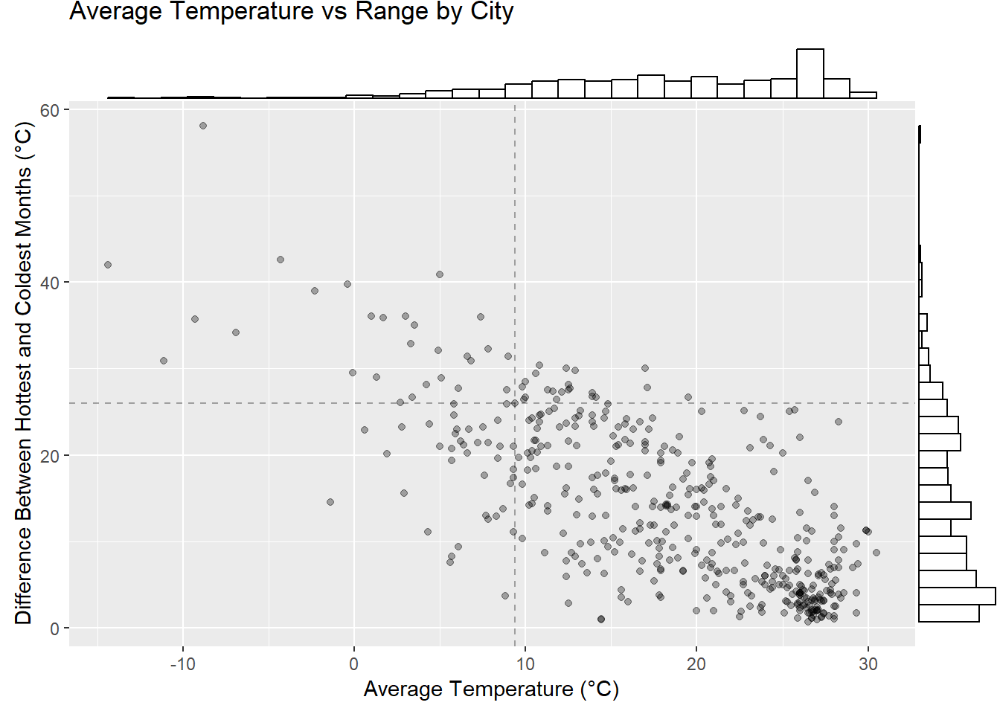
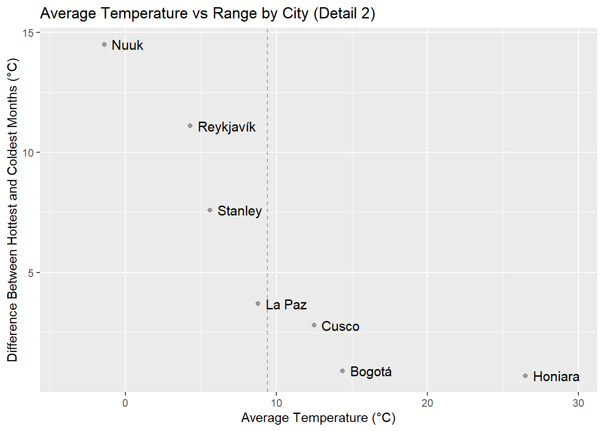

I live near Toronto. It’s springtime, and currently about 30 °C. In my opinion, Toronto is too hot in the summer and too cold in the winter. I’d like to know which cities have the least deviation from a tolerable average temperature.
# A tibble: 6 × 15
Country City Jan Feb Mar Apr May Jun Jul Aug Sep Oct
<chr> <chr> <dbl> <dbl> <dbl> <dbl> <dbl> <dbl> <dbl> <dbl> <dbl> <dbl>
1 Algeria Algiers 11.2 11.9 12.8 14.7 17.7 21.3 24.6 25.2 23.2 19.4
2 Algeria Tamanrass… 12.8 15 18.1 22.2 26.1 28.9 28.7 28.2 26.5 22.4
3 Algeria Reggane 16 18.2 23.1 27.9 32.2 36.4 39.8 38.4 35.5 29.2
4 Angola Luanda 26.7 28.5 28.6 28.2 27 23.9 22.1 22.1 23.5 25.2
5 Benin Cotonou 27.3 28.5 28.9 28.6 27.8 26.5 25.8 25.6 26 26.7
6 Benin Parakou 26.5 28.7 29.6 29 27.5 26.1 25.1 24.7 25 26.1
# … with 3 more variables: Nov <dbl>, Dec <dbl>, Year <dbl>
Each row corresponds to a distinct city. There are two text columns containing each city’s name and country, twelve numeric columns indicating the “averages of the daily highs and lows”1 for each month, and one additional numeric column containing the same figure for the entire year. The units are degrees Celsius. 455 cities are included in the data.
We’ll define the “deviation” mentioned above as the difference between the value recorded for the coldest and hottest months, and the “average” as the value recorded for the whole year overall.
We’ll ignore any other weather characteristics like humidity, rain, wind, diurnal temperature difference, etc.2
By global standards, Toronto is cool on average, but in keeping with my subjective perception, the deviation from that average over the year is quite large.
Plots
Let’s look at a scatter plot with marginal histograms:
plot <- city_temps |>ggplot(aes(x = avg, y = range)) +geom_point(alpha =0.33) +geom_vline(xintercept = toronto_avg,linetype ="dashed",alpha =0.33) +geom_hline(yintercept = toronto_range,linetype ="dashed",alpha =0.33) +labs(title ="Average Temperature vs Range by City",x ="Average Temperature (°C)",y ="Difference Between Hottest and Coldest Months (°C)") plot <- plot |>ggMarginal(type ="histogram", fill ="transparent", size =10)plot

Here Toronto is indicated by the dashed lines.
We can see there’s a negative association between a city’s average temperature and the range of temperatures experienced there. In particular, there’s a big cluster of very hot cities which have little difference between their hottest and coldest months.
Ten tropical cities fall into both the hottest decile and the least varying decile:
# A tibble: 10 × 1
# Rowwise:
city
<chr>
1 Lodwar
2 Palembang
3 Pontianak
4 Kuala Lumpur
5 Malé
6 Lanka Colombo
7 Oranjestad
8 Willemstad
9 Panama City
10 Barranquilla
While these cities see very little temperature variation throughout the year, they are much too hot.
Zooming In
The area of this plot I’m most interested in is the vertical slice around Toronto. Let’s see the same plot, including only the cities within one degree of Toronto’s average temperature.3 We’ll exclude the marginal histograms but add labels to the cities.
city_temps |>filter(abs(avg - toronto_avg)<=1) |>ggplot(aes(x = avg, y = range, label = city)) +geom_point(alpha =0.33) +geom_text(size =4, nudge_x =0.01, hjust ="left") +geom_vline(xintercept = toronto_avg,linetype ="dashed",alpha =0.33) +geom_hline(yintercept = toronto_range,linetype ="dashed",alpha =0.33) +labs(title ="Average Temperature vs Range by City (Detail 1)",x ="Average Temperature (°C)",y ="Difference Between Hottest and Coldest Months (°C)")
But which cities are the best? These would be the ones with the smallest range for a given maximum average. Let’s find them.
Finding the Cities with the Nicest Weather
We want to know, for each maximum average temperature, the city that has the minimum range of temperatures. These are the cities that form the “bottom-left edge” of our first plot.
city
1 Gjoa Haven
2 Dikson
3 Nuuk
4 Reykjavík
5 Stanley
6 La Paz
7 Cusco
8 Bogotá
9 Honiara
Of these, the first two have temperatures which are more variable than Toronto, so we can remove them from consideration.
Let’s plot the final seven candidates:
city_temps |>arrange(avg) |>cbind(city_temps |>arrange(avg) |>pull(range) |>cummin()) |>rename(running_min =4) |>filter(range == running_min) |>select(-running_min) |>filter(range <= toronto_range) |>ggplot(aes(x = avg, y = range, label = city)) +geom_point(alpha =0.33) +geom_text(size =4, nudge_x =0.5, hjust ="left") +geom_vline(xintercept = toronto_avg,linetype ="dashed",alpha =0.33) +scale_x_continuous(expand =expansion(mult =0.15)) +labs(title ="Average Temperature vs Range by City (Detail 2)",x ="Average Temperature (°C)",y ="Difference Between Hottest and Coldest Months (°C)")

Again we see that La Paz has a similar overall average temperature to Toronto, but much less annual variability. Cusco and Bogotá are warmer but even less variable.
Reykjavík and Stanley are colder than Toronto, and while they represent a smaller decrease in variability compared to La Paz, Cusco, and Bogotá, they have the benefit (for me) of being 98%+ English-speaking.
It would be interesting to use detailed time series for each city and a utility function on temperatures (perhaps including wind chill and humidex) to determine which cities are truly mean-variance optimal.
Of course, one should probably not choose a place to live based solely on the weather.
Footnotes
This is a bit ambiguous, but no matter. The article also points out that “the actual daytime temperature in a given month will be 3 to 10 °C higher than the temperature listed here, depending on how large the difference between daily highs and lows is.”↩︎
This may or many not be reasonable depending on your personal preferences about weather.↩︎
I haven’t defined an ideal average temperature, but any city with a similar average and smaller range than Toronto is a clear improvement.↩︎